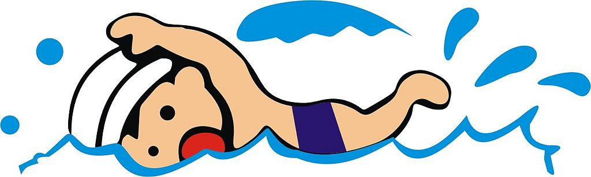

我看了《神奇动物在哪里》 2016－12－12.
我看了j·k·罗琳编剧的《神奇动物在哪里》，我觉得他是哈利波特的番外篇，这个电影里的动物制作很是奇特还有特殊的能力。3d特效使电影的动物似乎很是逼真，电影的故事内容不太好，故事情节不是太连贯，结局很一般。电影中胖子的角色很是搞笑，在霍霍格被消灭掉，有一个小小的飞了出去，可能在续集解释。
Play我学会了游泳 2016－12－13.

我学会了蛙泳。我的心得是：首先游泳要放松心情，放松身体使身体要在水面上浮起来，感觉自己是一只🐸，再像🐸一样蹬腿，双腿外翻让膝盖碰一下，可以蹬水的面积加大和夹水的面积也加大，使身体在水里前进更多，之后加紧腿停2秒，划手。划手使双臂自然下垂往后抱水 ，然后双臂合拢推出双手再蹬，反反复复就可以游了。
我今天做了什么 2016－12－16.
今天我8点半起床，之后我排💩和刷牙，带着困意吃了早饭，早饭我吃了两个煎鸡蛋和一个蜂蜜馒头，喝了半碗的奶茶，我7分饱。之后老姨来电话了，我下楼坐车去照照片。彩色白底照片还有电子版照片花了20快钱啊。坐车转了好大一圈终于回到了小区，真是费劲。回来上了一下游戏领下每日奖励，还刷了宝库副本有大神带2分钟刷完了之后关机了。看了猴子节目，猴脑很是诱人，我花了43块钱买了10个黄金圣衣箱之后我43.5卖掉了，其中赚了5毛，很是开心。吃了中午饭，有馒头，炒胡萝卜丝，青椒炒羊肉，都很好吃。吃完饭后当我要上床顺胃时，被老姨夫抓来写日记了 ，我现在在写日记，写呀，写呀